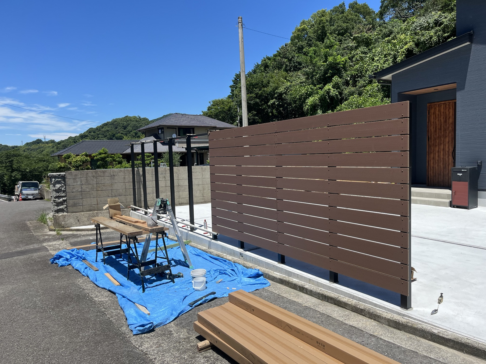

FOR EXTERIOR CONTRACTORS
直客を増やして、
適正な利益と仕事の主導権を。
外構を知る運営者が、あなたの得意分野に合う案件をつなぎます。
- 直客を増やしたい
- 下請け仕事だけに依存したくない
- もっと自分の時間で仕事を組みたい
施工店登録を申し込む直客案件を受けられる施工店として登録

WHY US
現場を知る運営だから、施工店側の利益と働き方まで考えます。
01
外構実務経験者が運営。工種や現場条件を踏まえて案件を確認します。
02
得意工事に合う案件を選別。無理な一斉紹介は行いません。
03
登録店を必要以上に増やさず、地域・工種ごとの案件数に応じて登録枠を調整します。
CONDITIONS
固定費をかけず、必要な時だけ使える仕組みです。
登録店様の案件密度を担保するため、地域・工種ごとに登録枠を設けます。
0円登録料
0円月額
最初の成約2件紹介料0円
3案件目以降成約時のみ紹介料
安売りを強要しません案件を受けるかは施工店側で判断
REGISTRATION
直客案件を受けられる施工店として登録する。
香川県以外の施工店様は、先行登録として受け付けます。